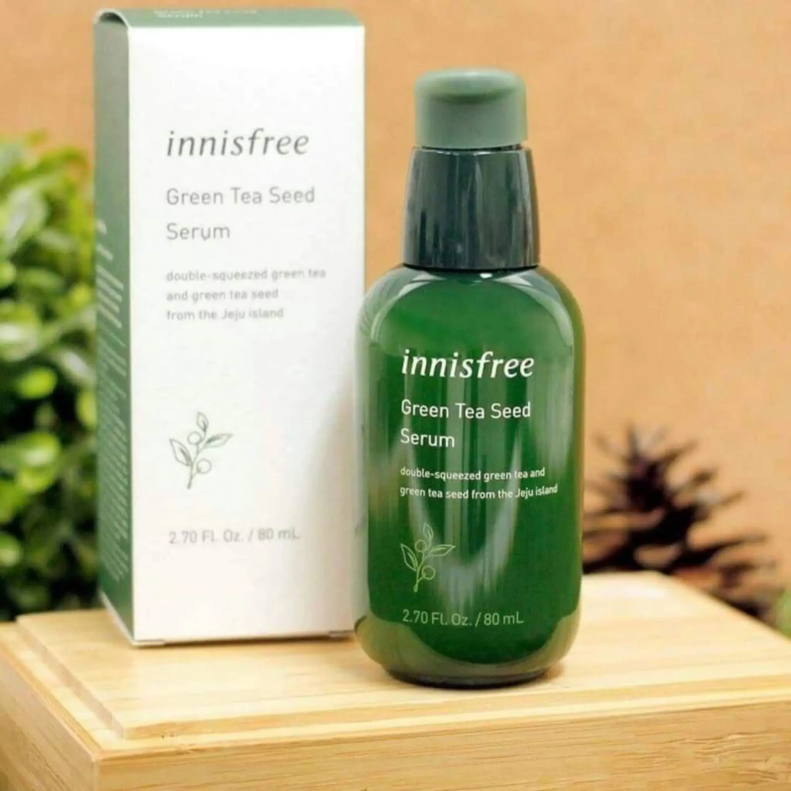

Green Tea Seed Serum

Starting from deeper layers of the skin to create the kind of hydration associated with the Glass Skin Effect, your skin is left looking plumped, well-hydrated and dewy.
What does Innisfree Green Tea Seed Serum do?
- Offers a hydrated yet fresh feel to the skin
- Helps to improve the skin’s moisture barrier, preventing moisture loss and improving skin healing time
Who should use Innisfree Green Tea Seed Serum?
- Ideal for all skin types
- Perfect choice for those prone to dehydration or skin discomfort
- Suitable even for sensitive skin
What makes Innisfree Green Tea Seed Serum different?
- Green tea extracts from Juju are free from pesticide use, and high in Vitamin C, amino acids, and catechin compounds for bright and youthful skin
- A high concentration of fresh green tea extract helps to keep the skin hydrated and defended
- Dual Moisture-Rising Technology helps to prevent water loss where it begins
- Green tea seed extracts work alongside green tea for a radiant, clearer complexion
How to use
- Apply an appropriate amount onto thoroughly cleansed face and neck then gently smooth for better absorption